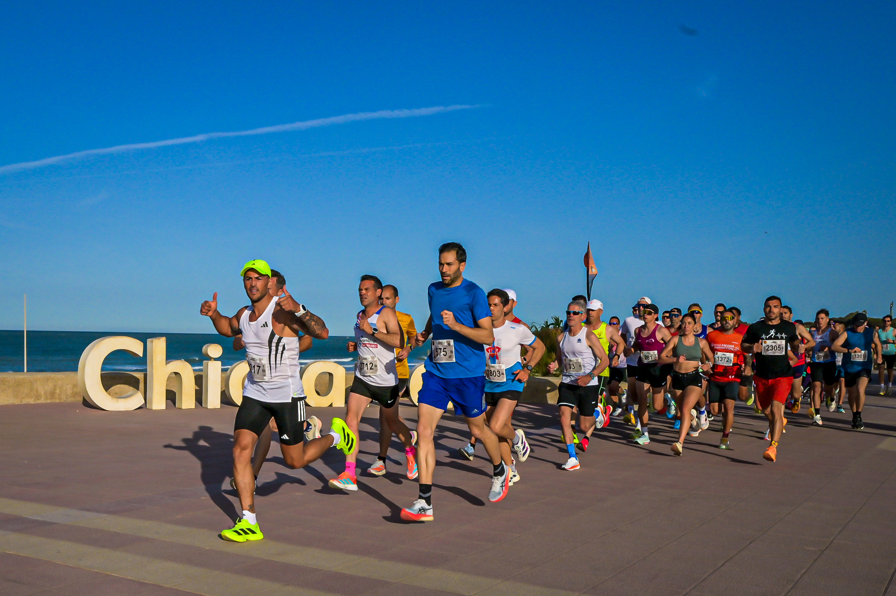
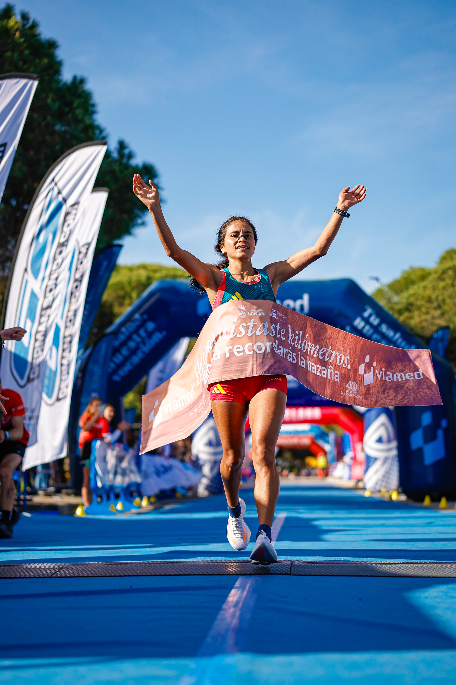

The III Viamed Media Maratón Ciudad de Chiclana started and finished at the Centro Deportivo Urbano Costa Sancti Petri in Chiclana de la Frontera, Cádiz, on Sunday 19 April 2026, with event coverage by the Image Media team. The 21.097-kilometre half marathon was Chiclana's first officially homologated race over the distance, and organisers reported the highest participation for a half marathon in the history of Cádiz province.
Around 2,800 runners from 33 countries registered for the event, organised by Club Deportivo Media Maratón Ciudad de Chiclana with institutional backing from the Ayuntamiento de Chiclana and the Diputación de Cádiz. Title sponsor Viamed headlined a sponsor list that also included Brooks, CaixaBank and ALS Sport, and former Olympic 1500m runner Martín Fiz took part as the race's ambassador.

Jorge González Rivera (Club Independiente) won the men's race and set a new course record, crossing the line in 1:03:27. Kelvine Kiptoo (Club Atletismo Albacete, Kenya) finished second in 1:04:36, and Cristian Martínez Aláez completed the podium in 1:05:22. Reyes Estévez, the fastest man in the previous edition, finished fifth overall in 1:10:03 to win the Master 50 category.
Katherine Tisalema Puruncaja (Club Bikila) won the women's race in 1:14:20, with Annet Chesang, of Uganda, second in 1:14:37.

Chiclana mayor José María Román said the course was "the ideal setting to achieve great marks," noting the competitive level had risen sharply since the race's first edition. The event has grown into what organisers describe as the city's flagship sporting fixture.
The Image Media coverage team comprised Michael Rosa, Paulo Nomade, Luis Moreira, Eduardo Castro and Fabricio Zerves.